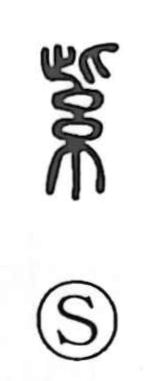

Explanation
A phono-semantic character: 糸, the silk thread, signals dyeing and color, while 此 provides the sound shi. The Shuowen describes it as the blue-red hue of silk, a beautiful intermediate color—what we call purple. In China, cloth was dyed this color with the gromwell plant (茈), and in Japan the same rich purple came from the root of murasaki, a gromwell whose profusion of small white summer blossoms has been linked to the folk etymology murasak(i) as “clustered blooming.” Because of its rarity and depth, purple came to be cherished as a noble color, reflected in courtly expressions such as shikin (the imperial precinct), shikyoku (the sovereign’s place), and shishin (the emperor’s hall). Even beyond East Asia, the prestige of purple was renowned, as in ancient Rome’s prized shellfish-dyed purpura.